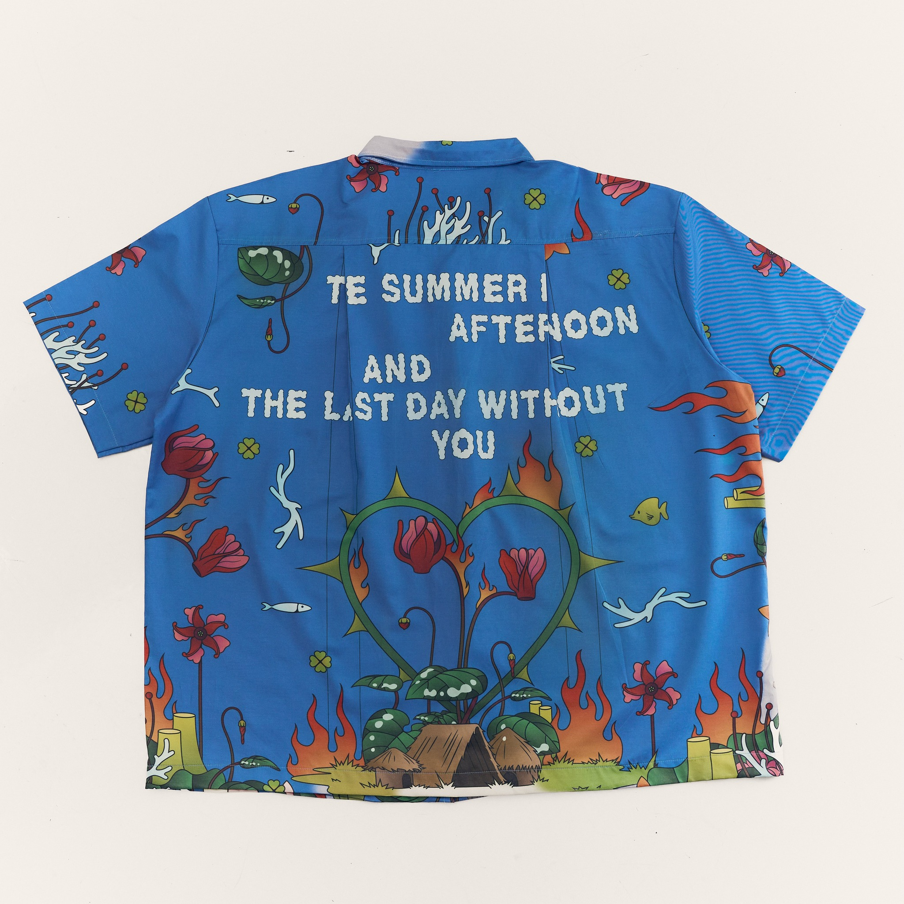
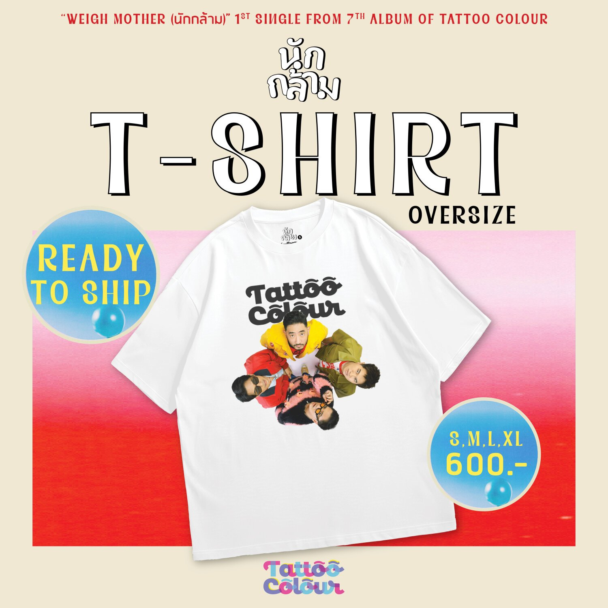

Product |
Information |
Price |
|
Joy2 X TATTOOCOLOUR(dim) |
เป็นเสื้อวงคัสตอมด้วยเทคนิคพิเศษแบบจอยทูแต่ซับซ้อนขึ้นด้วยขั้นตอน ที่สำคัญลายคัสตอมไม่ซ้ำกันสักตัวเพื่อคุณค่าน่าสะสมแด่แฟนตัวจริงและมือไวเท่านั้น !! LIMITED EDITION ผลิตจำนวน 333 ชิ้น |
฿ 1,350 |
| 
Joy2 X TATTOOCOLOUR(tonk) |
|
฿ 1,290 |
| 
T-Shirt : นักกล้าม | Tattoo Colour |
T-Shirt : นักกล้าม | Tattoo Colour ไอเทมเสริมความมั่นใจ เพราะไปที่ไหนใครก็เรียก 'นักกล้าม' !!เสื้อยืด 'นักกล้าม' สีขาวทรง Tokyo Oversize ที่มาพร้อมโลโก้จากอัลบั้มใหม่ของวง |
฿ 600 |